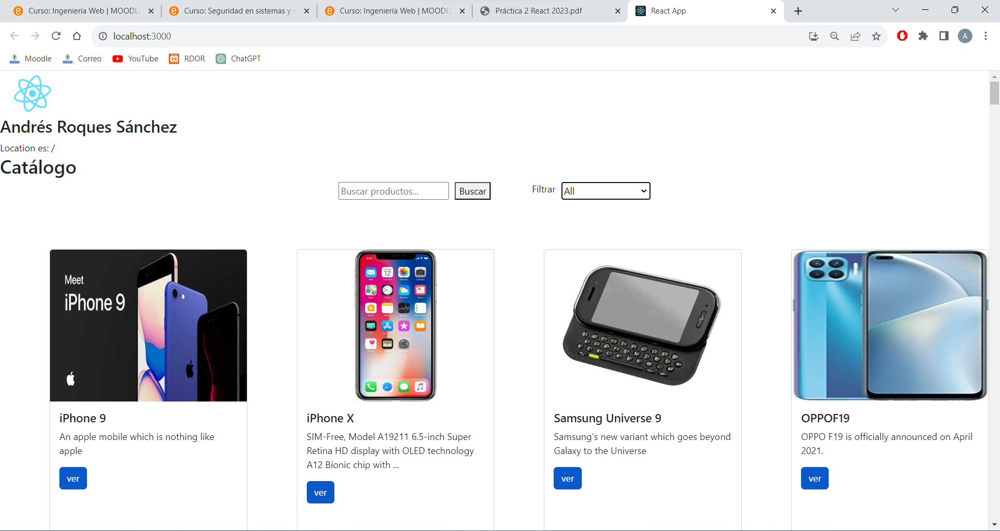
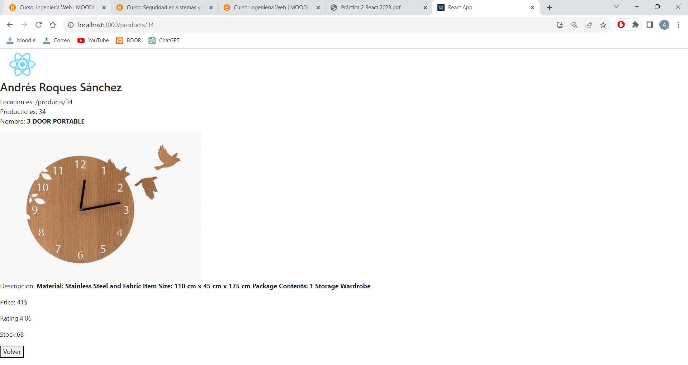

IWEB · 2023–2024
Del navegador al móvil: React, React Native y SwiftUI
Tres prácticas de desarrollo centradas en el mismo tipo de interacción —catálogos, navegación y estado de interfaz— llevadas a tecnologías diferentes: una web React, una app React Native con Expo y una aplicación iOS nativa con SwiftUI.
Los ZIP originales incluían node_modules, autocorrectores, dependencias y archivos de entorno. El entregable publicado contiene únicamente el código relevante y recursos propios de las tres prácticas.
Prácticas
Una progresión multiplataforma.
Catálogo web con React
Listado de productos, búsqueda textual, filtro por categoría, vista de detalle y navegación con React Router.
Catálogo móvil con React Native
Portado del catálogo a Expo/React Native usando FlatList, Stack Navigation, componentes móviles y estado local.
Quiz nativo con SwiftUI
Carga de preguntas desde JSON, NavigationStack, imágenes asíncronas, comprobación de respuestas y puntuación.
Interacción y estado
Gestión de loading, búsqueda, navegación, detalle, feedback de respuesta y estado compartido entre vistas.
Evidencias
Interfaz de la práctica React.


Stack
Tecnologías y conceptos
Entregable seleccionado